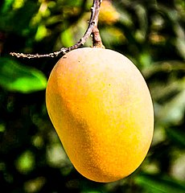
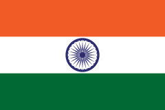
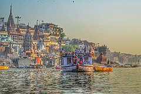
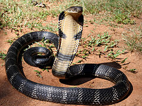
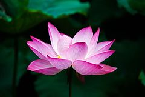
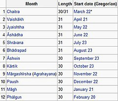
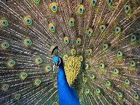

Mango is referred to as the King of Fruits
| Symbol: | Name: | Image: | Refference: |
|---|---|---|---|
| Official Name | Republic Of India | | Bhārat has been used as a self-ascribed name by some people of the Indian subcontinent and the Republic of India.The designation Bhārat appears in the official Sanskrit name of the country, Bhārat Gaṇarājya. The name is derived from the ancient Hindu Puranas, which refer to the land that comprises India as Bhāratvarṣa (Sanskrit: भारतवर्ष, lit 'country of Bharat') and uses this term to distinguish it from other varṣas or continents.For example, the Vayu Purana says "he who conquers the whole of Bhāratvarṣa is celebrated as a samrāt (Vayu Purana 45, 86). |
| National Fruit | Mango |  | Mango (Mangifera indica) originated in India and the country is home to more than 100 varieties of the fruit. Mango is referred to as the King of Fruits |
| Oath Of Allegiance | National Pledge |  | It was written in Telugu by Pydimarri Venkata Subba Rao in 1962. Central Advisory Board on Education directed that the pledge to be sung in Schools and that this practice to be introduced by 26 January 1965.It is commonly recited by Indians in unison at public events, especially in schools, and during the Independence Day and Republic Day celebrations. |
| National Tree | Tree Indian Banyan (Ficus benghalen) | Indian banyan (Ficus bengalensis) root themselves to form new trees and grow over large areas. Because of this characteristic and its longevity, this tree is considered immortal and is an integral part of the myths and legends of India. | |
| National Song | Vande Mataram ("I bow to thee, O Mother!") | Vande Mataram is a Sanskrit poem written by Bankim Chandra Chatterjee which he included in his 1882 Bengali novel Anandamath. The poem was first sung by Rabindranath Tagore at the 1896 session of the Indian National Congress. The first two verses of the song were adopted as the National Song of India On 24 January 1950 by the Constituent Assembly of India | |
| National Rever | Ganga |  | The Ganges is a lifeline to millions who live along its course.[citation needed] It is a sacred river and worshipped as the goddess Ganga in Hinduism. It has been important historically; many former provincial or imperial capitals (such as Prayagraj, Dhaka, Baharampur, Bikrampur, Kampilya, Kannauj, Kara, Kashi, Kolkata, Murshidabad, Munger, Patliputra, and Sonargaon) have been located on its banks. |
| National Reptile | King Cobra (Ophiophagus hanna) |  | Snake eater (Ophiophagus hannah) or King Cobra is the National Reptile of India. King Cobra is found in the forests of India and also in Southeast Asia. King Cobra is known as the longest venomous snake of the world. King Cobra may live up to 25 years and is capable of growing up to 19 ft. In Hinduism King cobra is considered as divine and known as Nagas and Lord Shiva is often depicted with a cobra coiled around his neck |
| National Heritage Animal | Indian Elephant (Elephas maximus indicus) | Indian elephant is the national heritage animal of India since 22 October 2010. India's Environment Ministry has declared the elephant a National Heritage Animal in order to increase protective measures for the country's nearly 29,000 elephants."Declaring it the National Heritage Animal will give it due place as emblem of ecological sensitivity. It will also mark recognition for its centrality in our plural cultures, traditions and oral lore," the task force wrote in its report | |
| National Flower | Lotus (Nelumbo nucifera) |  | Lotus (Nelumbo Nucifera Gaertn) is the National Flower of India. It is a sacred flower and occupies a unique position in the art and mythology of ancient India and has been an auspicious symbol of Indian culture since time immemorial. |
| National Flag | National Flag of India Hindi: तिरंगा (Tiraṅgā) | A horizontal rectangular tricolour with equally sized deep saffron at the top, white in the middle and India green at the bottom. Saffron colour is a symbol of sacrifice and courage. White colour of National flag represents peace, honesty, and purity. Green colour of National flag represents faith and chivalry, and is a symbol of prosperity, vibrancy, and life. Shape of National Flag shall be in the ratio of 3:2 ( ratio of length to height ).[6] In the center is a navy blue wheel with twenty-four spokes, known as the Ashoka Chakra. The flag is based on the Swaraj flag designed by Pingali Venkayya. | |
| National Emblem & National Motto | State Emblem of India (Lion Capital of Ashoka) "Satyameva Jayate" Sanskrit: "सत्यमेव जयते "("Truth Alone Triumphs") | An adaptation of Lion Capital of Ashoka at sarnath was adopted as the National Emblem of India on 26 January 1950, the day India became a republic. Forming an integral part of the emblem is the motto inscribed below the abacus in Devanagari script: "Satyameva Jayate" (English: Truth Alone Triumphs), a quote taken from Mundaka Upanishad, the concluding part of the sacred Hindu Vedas | |
| National Days | Independence Day,Republic Day,Gandhi Jayanti | 26 January Republic Day, adoption of the Constitution of India in 1950 15 August Independence from the British Empire in 1947 2 October Gandhi Jayanti, birth anniversary of Father of the Nation | |
| National Currency | Indian Rupee ("₹, INR") | ndian rupee (ISO code: INR) is the official currency of the Republic of India. The issuance of the currency is controlled by the Reserve Bank of India. The Indian rupee symbol is derived from the Devanagari consonant "र" (ra) and the Latin letter "R" was adopted in 2010. According to Udaya Kumar, its designer, the design is based on the Indian tricolour. | |
| National Cockade | Indian Cockade | A cockade is a knot of ribbons, or other circular- or oval-shaped symbol of distinctive colours which is usually worn on a hat. | |
| National Calendar | Indian National Calendar |  | The Indian national calendar, sometimes called the Shalivahana Shaka calendar. It is used, alongside the Gregorian calendar, by The Gazette of India, in news broadcasts by All India Radio and in calendars and communications issued by the Government of India. |
| National Bird | Indian Peacock (Pavo cristatus) |  | Indian peacock (Pavo cristatus) is designated as the national bird of India. A bird indigenous to the subcontinent, the peacock represents the unity of vivid colours and finds references in Indian culture.[13] On 1 February 1963, The Government of India had decided to have the Peacock as the national bird of India. |
| National Aquatic Animal | Ganges River Dolphin (Platanista gangetica) | The South Asian river dolphin (Platanista gangetica) is an endangered freshwater or river dolphin found in the region of Indian subcontinent, which is split into two subspecies, the Ganges river dolphin and the Indus river dolphin. The Ganges river dolphin is primarily found in the Ganges and Brahmaputra Rivers and their tributaries in India, Bangladesh, and Nepal, while the Indus river dolphin is now found only in the main channel of the Indus River in Pakistan and River Beas (a tributary of the Indus) in Punjab in India.The Ganges river dolphin has been recognized by the government of India as its National Aquatic Animal. | |
| National Anthem | Jana Gana Mana ("Thou Art the Ruler of the Minds of All People") | Jana Gana Mana is the national anthem of India. It was originally composed as Bharoto Bhagyo Bidhata in Bengali by polymath Rabindranath Tagore. The first stanza of the song Bharoto Bhagyo Bidhata was adopted by the Constituent Assembly of India as the National Anthem on 24 January 1950. | |
| National Animal | Royal Bengal Tiger | The Tiger or Panthera tigris species has a subspecies called Royal Bengal Tiger. Royal Bengal Tiger is National Animal of India with effect from April 1973.[9] Tiger is one of the largest specimen among the cat family. It is a form of a specific population of the Panthera tigris subspecies that is native to the Indian subcontinent. Nagpur is known as the ‘Tiger Capital of India’. Due to decrease of forest cover and poaching the population of Royal Bengal Tigers are falling abruptly and Tigers are added in the Red List by the IUCN. Indian Government has launched Project Tiger in 1973 to conserve the Tigers |